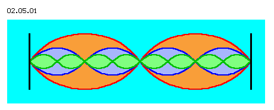

| Alfred Evert | 07.03.2003 |
02.05. Keine stehende Welle
Blackbox
Als eine noch weniger präzise definierte ´Blackbox´ wird in letzter Zeit immer häufiger der Begriff ´stehende Welle´ verwendet. Es wird z.B. die elektromagnetische Welle lediglich bestehend aus Feldern beschrieben, für eine ´stehende´ Wellen aber müssen darüber hinaus ganz bestimmte Voraussetzungen gegeben sein (die meist nicht definiert oder angesprochen werden).

In Bild 02.05.01 ist schematisch dargestellt, wie drei Wellen ineinander beispielsweise stehend ausgebildet werden können. Unerlässlich dabei ist die Anordnung von Spiegelflächen (schwarze senkrechte Linien) in genau zur Wellenlänge stimmiger Distanz. Wenn die Distanz ein Vielfaches der Wellenlänge beträgt, so ergeben sich ´stehende Knoten´ (wie bei diesem Bild). Wenn die Distanz ein ungerades Vielfaches der halben Wellenlänge ist, wird die Welle komplett in sich gespiegelt. Zum anderen ist erforderlich, dass die Spiegelflächen genau senkrecht zur Ausbreitungsrichtung angeordnet sind.
Stehende Wellen sind also nur bei gerichteter Aussendung bestimmter Frequenz in Relation zur exakt justierten Spiegelfläche gegeben. Wenn diese Voraussetzungen nicht gegeben sind, ergibt sich keine stehende Welle, sondern ganz normaler ´Wellensalat´. In technischer Hinsicht sind diese Erfordernisse in vielen Geräten (d.h. in mehr oder weniger geschlossenen Systemen) problemlos zu erfüllen und es werden die angestrebten Effekte erreicht.
Natürliche Gegebenheiten
Als stehend Welle wird beispielsweise von einigen Forschern die Gravitation vermutet. Andere betrachten die Elektronen um den Atomkern als stehende Wellen. Auch die (untaugliche) Theorie des Global Scaling basierte auf der Existenz stehender Wellen im gesamten Universum. Sicherlich gibt es noch mehr Vermutungen, bei welchen stehende Wellen als Ursache bestimmter Erscheinungen angesehen werden.
Bei vielen dieser Überlegungen wurden meines Erachten die Voraussetzungen nicht ausreichend berücksichtigt (Sender, Frequenz, Ausbreitungsrichtung, Spiegelfläche). Beispielsweise sind diese Voraussetzungen im weiten All kaum gegeben (wandernde Sender, unregelmäßige Frequenz, verzerrte Ausbreitung, zwischendurch reflektierte Strahlung, nicht ruhende oder nicht senkrechte Spiegelflächen usw.).
Im Äther des Alls wie in der Nähe von Himmelskörpern wird es darum wohl kaum stehende Wellen natürlicher Herkunft geben - wohl aber basieren letztlich alle technisch eingesetzte, stehende Wellen letztlich auf Ätherbewegung.
Spiegelung am Nichts
Das einfache mechanische Beispiel einer Welle ist das eines Seils, dessen eines Ende mit der Hand in Schwingung versetzt wird, während das hintere Ende an einer Wand befestigt ist. Es sind damit leicht z.B. stehende Knoten zu erreichen.
Dieses Wellenbild ist (mit etwas Geschick) auch zu erreichen, wenn das hintere Ende lose ist. Die Welle läuft dann durch das Seil - aber sie kommt nicht per Spiegelung zurück, sondern weil am vorderen Ende mit der Hand erheblicher Zug ausgeübt wird. Wenn man das Seil loslässt, dann läuft die Welle ´hinten raus´ und es ergibt sich niemals mehr ein stehender Schwingungsknoten.
Also nur die Festigkeit des Seils (und der manuelle Zug) lässt die Welle zurück laufen, selbst bei ´Leere´ am hinteren Ende. Bei der (elektromagnetischen) Welle des abstrakten Feldes wird aber gerade negiert, dass dabei ein Medium (auf Zug belastbar) eine Rolle spielen sollte. Diese Vermischung abstrakter Vorstellungen (mit Negierung eines konkreten Mediums) mit Erfahrungswerten der mechanischen Welt (in nur bedingt zutreffender Analogie) führt zwangsläufig zu unzureichenden Vorstellungen.
Im Universum sind praktisch die Voraussetzungen für die Ausbildung und den stabilen Bestand stehender Wellen dieser Art nicht gegeben. In den folgenden beiden Kapiteln werden aber alternative, ´stehende Wellen´ aufgezeigt, welche ohne Ausbreitung und Spiegelung dennoch allgegenwärtig sind.
Die Physik verzichtet oftmals auf konkrete Erklärung physikalischer Erscheinungen (beispielsweise der elektrischen bzw. magnetischen Kraft oder der Gravitation) und arbeitet mit dem Platzhalter-Begriff des Feldes. Zwar sind die Kräfte dieser Felder per bekannter Formeln rechenbar (und insofern ist dieser abstrakte Begriff akzeptabel), aber das Wesen bzw. der reale Hintergrund dieser Erscheinungen bleibt dennoch ungeklärt.
Stehende Wellen werden technisch in vielen Anwendungen realisiert, es werden damit Effekte erreicht, die sonst nicht möglich wären. Aber der Aufbau, die Erhaltung und Nutzung stehender Wellen ist an sehr enge Voraussetzungen gebunden.
Aber stehende Wellen werden inzwischen auch ´verantwortlich´ gemacht für Erscheinungen ´in freier Natur´, d.h. in offenen Systemen bzw. unter nicht-Laborbedingungen bzw. bei nicht in mechanischen Geräten fixierten Verhältnissen.
Gerade am Problem der Spiegelung wird deutlich, wie einerseits in abstrakten ´Feldern´ gedacht wird, andererseits Vorstellungen der Mechanik (unzulässiger Weise) unterstellt werden. So wird immer wieder behauptet (oder eben nur stillschweigend unterstellt), eine Welle könne sich an ´verdünnten Bereichen´ spiegeln (und das mit obiger Präzision).
02.06. Spiralknäuel
Äther-Physik und -Philosophie